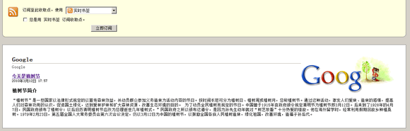
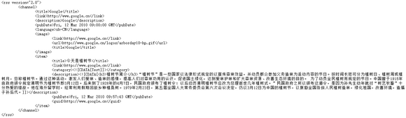
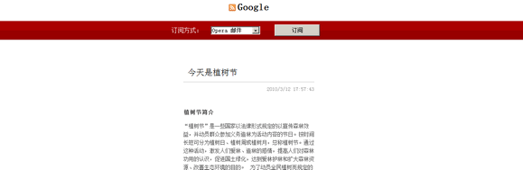

CH9003: IE6 和 Chrome 未按预期方式处理 content-type 为 application/rss+xml 的内容
标准参考
content-type 用于定义用户的浏览器或相关设备如何显示将要加载的数据，或者如何处理将要加载的数据，此属性的值可以查看 MIME 类型。
MIME (Multipurpose Internet Mail Extensions，多用途互联网邮件扩展) 是描述消息内容类型的因特网标准。MIME 消息能包含文本、图像、音频、视频以及其他应用程序专用的数据。
content-type 一般以下面的形式出现：
Content-Type: [type]/[subtype]; parameter
type 有下面的形式：
- Text：用于标准化地表示的文本信息，文本消息可以是多种字符集和或者多种格式的；
- Multipart：用于连接消息体的多个部分构成一个消息，这些部分可以是不同类型的数据；
- Application：用于传输应用程序数据或者二进制数据；
- Message：用于包装一个E-mail消息；
- Image：用于传输静态图片数据；
- Audio：用于传输音频或者音声数据；
- Video：用于传输动态影像数据，可以是与音频编辑在一起的视频数据格式。
subtype 用于指定 type 的详细形式。“type/subtype”配对的集合和与此相关的参数。下面是最经常用到的一些 MIME 类型：
- text/html（HTML 文档）；
- text/plain（纯文本）；
- text/css（CSS 样式表）；
- image/gif（GIF 图像）；
- image/jpeg（JPG 图像）；
- application/x-javascript（JavaScript 脚本）；
- application/x-shockwave-flash（Flash）；
- application/x- www-form-urlencoded（使用 HTTP 的 POST 方法提交的表单）；
- application/rss+xml（RSS）；
- multipart/form-data（同上，但主要用于表单提交时伴随文件上传的场合）。
关于 content-type 的详细信息，请参考 HTML4.01 规范 6.7 Content types (MIME types) 中的内容。
关于 MIME 的相信信息，请参考 IETF 的 [RFC2045] 及 [RFC2046] 规范。
更多的 MIME 类型参见：http://www.utoronto.ca/webdocs/HTMLdocs/Book/Book-3ed/appb/mimetype.html。
问题描述
IE6 不支持 RSS，使用浏览器打开响应头为 application/rss+xml 的内容会当做二进制文件而提示下载；Chrome 会将 application/rss+xml 以纯文本处理而显示出源代码。
造成的影响
由于浏览器对 RSS 缺乏支持，可能导致浏览者无法正常读取到 RSS 内容。
受影响的浏览器
| IE6 | 不支持 RSS，使用浏览器打开响应头为 application/rss+xml 的内容会当做二进制文件而提示下载。 |
|---|---|
| Chrome | 将 application/rss+xml 以纯文本处理而显示出源代码。 |
问题分析
创建一个 Web 服务器，如 Apache。在服务器上编写一段动态代码 "news.php"，如：
<?php
header('Content-Type: application/rss+xml');
?>
<rss version="2.0">
<channel>
<title>Google</title>
<link>http://www.google.cn</link>
<description>Google</description>
<pubDate>Fri, 12 Mar 2010 09:00:00 GMT</pubDate>
<language>zh-CN</language>
<image>
<link>http://www.google.cn</link>
<url>http://www.google.cn/logos/arborday10-hp.gif</url>
<title>Google</title>
</image>
<item>
<title>今天是植树节</title>
<link>http://www.google.cn</link>
<category><![CDATA[Test]]></category>
<description><![CDATA[<h3>植树节简介</h3>“植树节”是一些国家以法律形式规定的以宣传森林效益，并动员群众参加义务造林为活动内容的节日。按时间长短可分为植树日、植树周或植树月，总称植树节。通过这种活动，激发人们爱林、造林的感情，提高人们对森林功用的认识，促进国土绿化，达到爱林护林和扩大森林资源、改善生态环境的目的。 为了动员全民植树而规定的节日。中国曾于1915年由政府颁令规定清明节为植树节即3月12日。后来到了1928年的4月7日，民国政府颁布了植树令：以后旧历清明植树节应改为总理逝世几年植树式。”民国政府之所以颁布这道令，是因为孙先生幼年就对“树艺牧畜”十分热爱的缘故。他在海外留学时，经常利用假期回故乡种植桑树。1979年2月23日，第五届全国人大常务委员会第六次会议决定，仍以3月12日为中国的植树节，以鼓励全国各族人民植树造林，绿化祖国，改善环境，造福子孙后代。]]></description>
<pubDate>Fri, 12 Mar 2010 09:57:43 GMT</pubDate>
<guid>http://www.google.cn</guid>
</item>
</channel>
</rss>
客户端创建 RSS 链接文档 "rss.html"：
<link rel="alternate" type="application/rss+xml" title="RSS" href="news.php" /> <a href="news.php">订阅新闻</a>
浏览器中打开服务器地址中的“rss.html”，比如： http://localhost/rss.html
在 IE7/8 中点击 RSS 图标 ，在 其他浏览器 中点击“订阅新闻”超链接：
| IE6 |  |
|---|---|
| IE7/8 |  |
| Firefox |  |
| Chrome |  |
| Safari |  |
| Opera |  |
可见：
- 在 IE6 中，浏览器不支持 RSS，对于 content-type 为 "application/rss+xml" 的 HTTP 响应头，浏览器将其当做二进制文件提供下载；
- 在 Chrome 中，浏览器将 content-type 为 "application/rss+xml" 的 HTTP 响应头作为纯文本处理，则 RSS 代码被显示出来，出现此原因也是由于浏览器原生不支持 RSS；
- 在 IE7/8 中，浏览器根据页面中的
<link rel="alternate" type="application/rss+xml" title="RSS" href="news.php" />自动探测出 RSS 信息后，RSS 图标会变为可用，点击后可显示 RSS 信息。但直接打开 RSS 的 URL 也会像 IE6 中一样提示下载； - 在 其他浏览器 中，则根据各自浏览器对于 RSS 的默认样式渲染 RSS 数据。
解决方案
各浏览器对于 RSS 的支持及渲染方式为浏览器各自实现导致，故无法通过常规办法使各浏览器达到一致的效果，对于暂不支持 RSS 的浏览器应给予提示。Chrome 可通过安装扩展插件实现此功能。
参见
知识库
相关问题
测试环境
| 操作系统版本: | Windows 7 Ultimate build 7600 |
|---|---|
| 浏览器版本: |
IE6 IE7 IE8 Firefox 3.6 Chrome 5.0.342.2 dev Safari 4.0.4 Opera 10.50 |
| 测试页面: | rss.html |
| 本文更新时间: | 2010-08-02 |
关键字
content-type rss 文档类型 xml atom 订阅